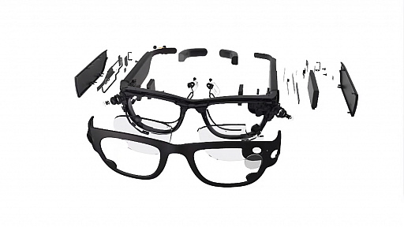
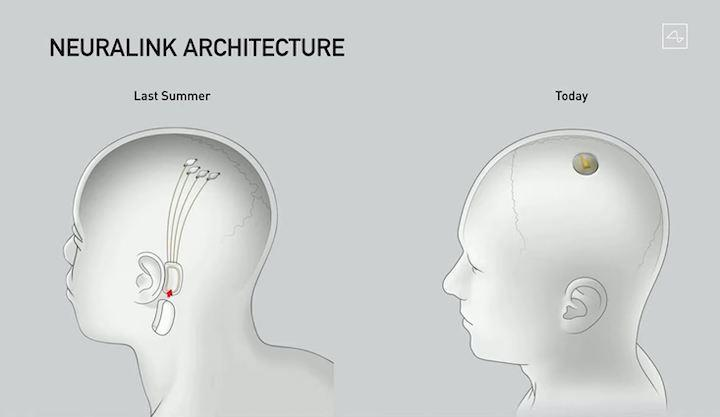

宅万の趣味のページ
ガジェット「Project Aria」
「Project Aria」はユーザー個人の情報獲得を念頭に置いており、置き忘れたカギの場所を形状で見つけたり，目の前のレストランのメニューや混み具合をチェックしたりなど，さまざまな情報をユーザーに提示してくれる様子が確認できた。
ガジェット２「Neuralink」
ニューラリンクは、ブレイン・マシン・インターフェイスを頭に埋め込み、記憶障害、難聴、抑うつ、不眠、依存症、脳卒中、麻痺、発作など、様々な神経疾患を解決することを目指している。視覚、聴覚、痛覚など、私たちのあらゆる感覚は、ニューロン（神経細胞）からの電気信号で脳に伝えられている。ニューラリンクでは、これらの電気信号を可視化し、修正することで、神経疾患の治療に役立つのではないかと考えている。
リンク
トップページ